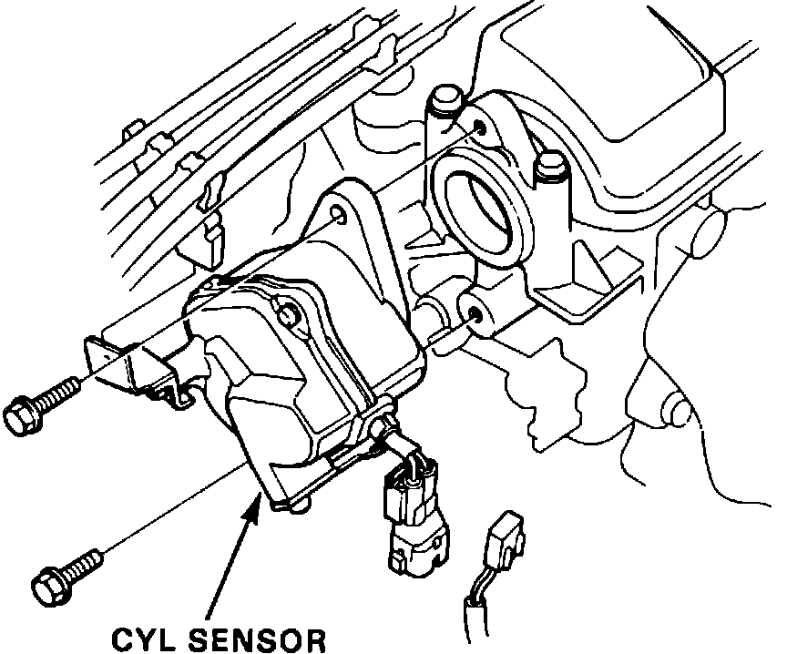
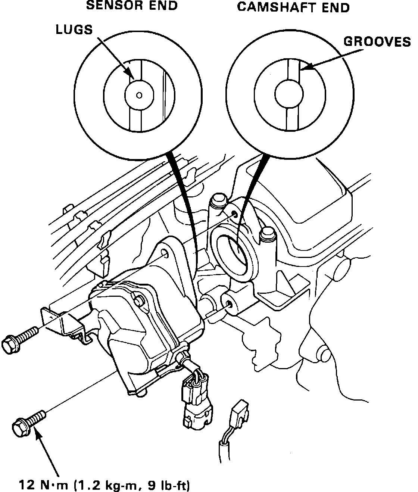

Crankshaft Position Sensor: Service and Repair
CYL Sensor Replacement:

REMOVAL
1. Disconnect 2 wire CYL sensor harness connector.
2. Remove spark plug wire loom.
3. Remove CYL sensor mounting screws (2).
4. Slide CYL sensor out of cylinder head.
CYL Sensor Replacement:

INSTALLATION
1. Install new O-ring on sensor housing.
2. Align sensor lugs with grooves on camshaft end and insert sensor into cylinder head.
3. Install mounting screws and torque to 9 ft.lbs (12 Nm).